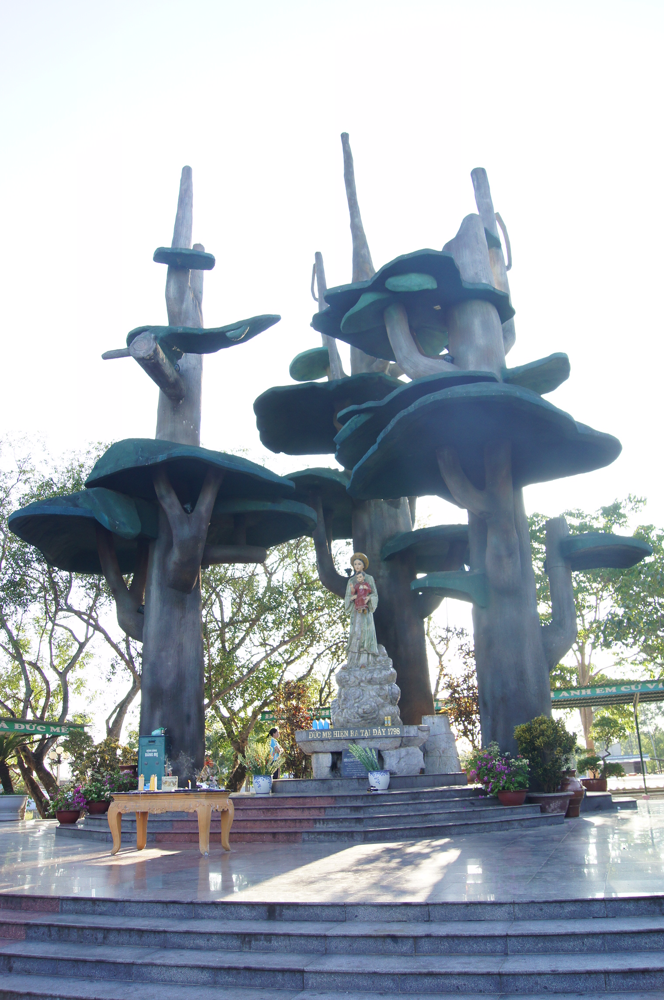
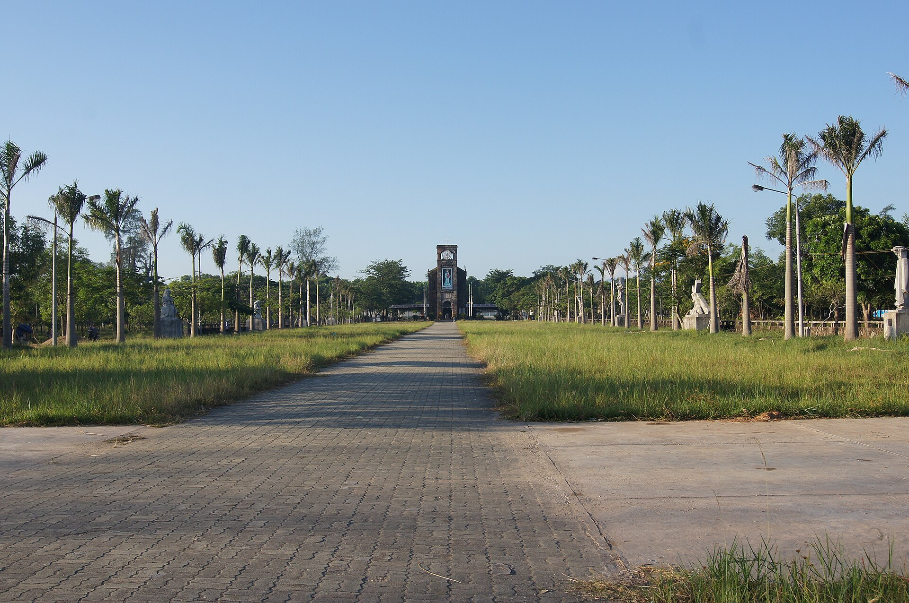
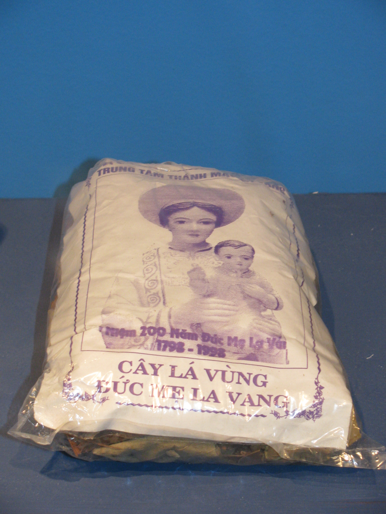
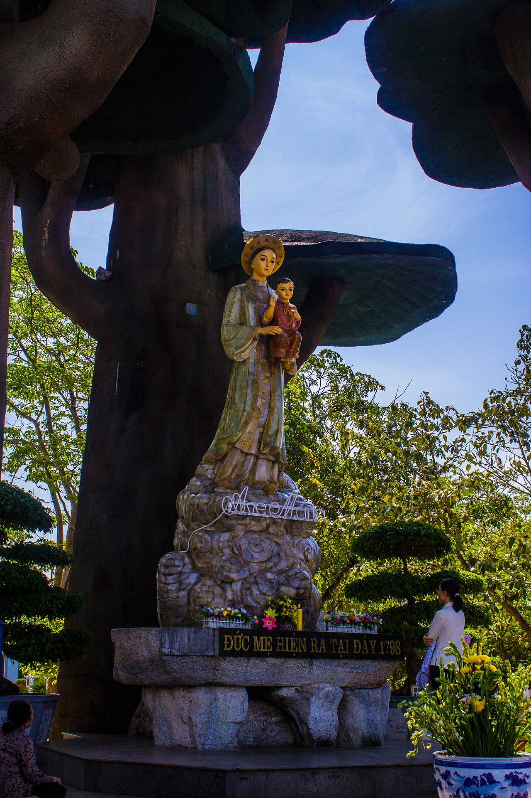
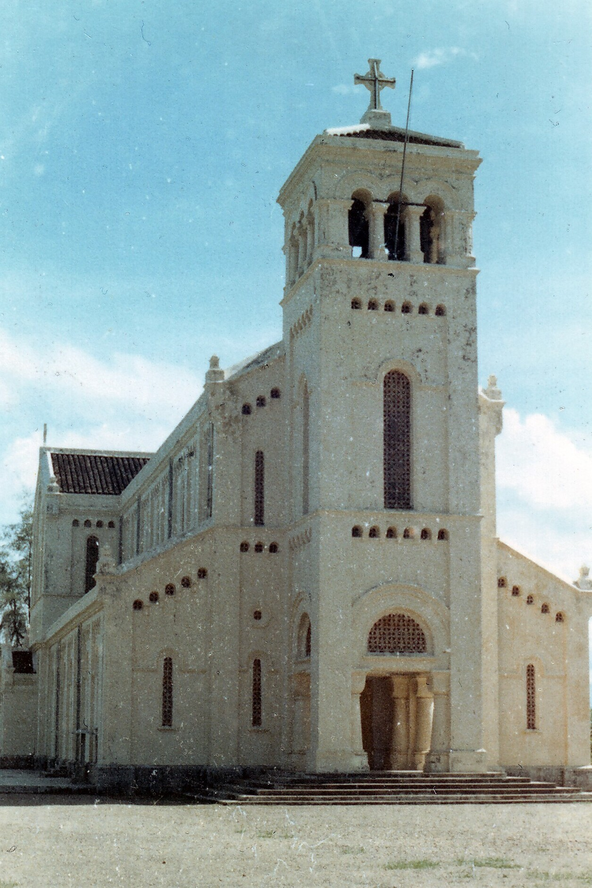
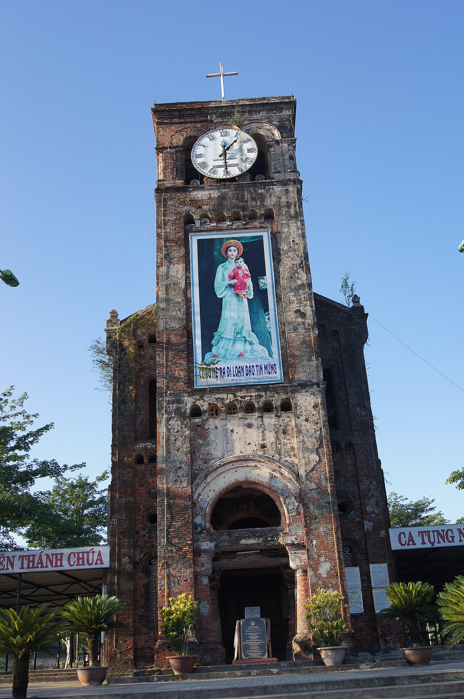
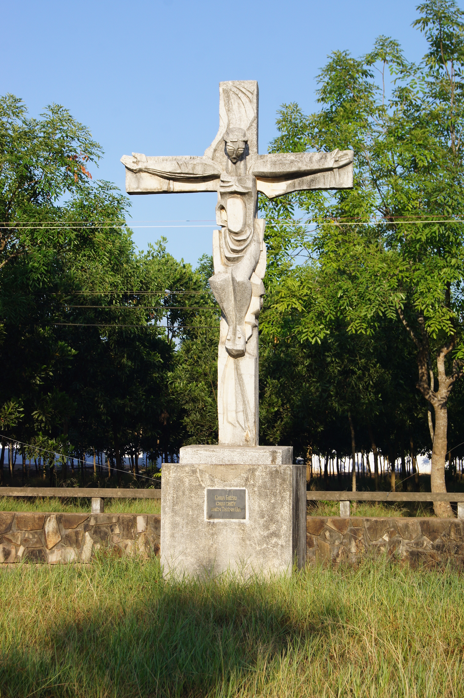

1

Linh Đài Đức Mẹ
Nơi lưu giữ dấu tích Đức Mẹ hiện ra. Kiến trúc mô phỏng ba cây đa khổng lồ che bóng cho tượng Đức Mẹ La Vang mặc áo dài, đầu đội triều thiên, tay bồng Chúa Hài Đồng.

Trung tâm Hành hương Thánh Mẫu Toàn quốc của Giáo hội Công giáo Việt Nam — nơi hội tụ niềm tin, lịch sử và kiến trúc độc đáo giữa mảnh đất thiêng Quảng Trị.
Tọa lạc tại xã Hải Lăng, tỉnh Quảng Trị, Thánh địa La Vang là điểm đến tâm linh quan trọng bậc nhất của người Công giáo Việt Nam. Nơi đây cũng rộng mở đón du khách thập phương — không phân biệt tôn giáo — tìm về sự bình an, tĩnh lặng và ơn chữa lành.
Giả thuyết 1 — Bắt nguồn từ tiếng “la vang” (kêu cứu): xưa kia đây là chốn rừng thiêng nước độc, lắm thú dữ, người đi rừng phải la lớn để báo tin cho nhau.
Giả thuyết 2 — Bắt nguồn từ chữ “lá vằng” — loại lá cây rừng có dược tính mà theo truyền khẩu, Đức Mẹ đã chỉ cho giáo dân hái nấu uống chữa bệnh — về sau đọc trại thành “La Vang”.

Hơn hai thế kỷ trước, giữa cơn bách hại, đoàn con cái Chúa đã tìm về cánh rừng La Vang — và một câu chuyện đức tin được khai sinh từ đó.
Dưới thời vua Cảnh Thịnh (nhà Tây Sơn), đạo Công giáo bị cấm cách gay gắt. Một nhóm giáo dân đã trốn vào rừng sâu La Vang để lánh nạn. Trải qua đói khát, bệnh tật và hiểm nguy thú dữ, họ cùng nhau quây quần dưới gốc cây đa cổ thụ để sốt sắng cầu nguyện.
Tương truyền, Đức Trinh Nữ Maria đã hiện ra trong tà áo dài truyền thống Việt Nam, tay bồng Chúa Hài Đồng, hai bên có hai thiên thần cầm đèn chầu. Mẹ đã ủi an, hứa ban ơn bình an và chỉ cho họ hái một loại lá cây rừng nấu uống để chữa bệnh.
Hội đồng Giám mục Việt Nam công bố La Vang là Trung tâm Thánh Mẫu Toàn quốc. Cùng năm, Đức Giáo hoàng Gioan XXIII nâng nhà thờ La Vang lên hàng Tiểu Vương cung Thánh đường, ghi dấu vị thế đặc biệt của Thánh địa trong lòng Giáo hội.


Mỗi công trình tại La Vang là một chứng nhân của đức tin, lịch sử và bản sắc văn hóa Việt.

Nơi lưu giữ dấu tích Đức Mẹ hiện ra. Kiến trúc mô phỏng ba cây đa khổng lồ che bóng cho tượng Đức Mẹ La Vang mặc áo dài, đầu đội triều thiên, tay bồng Chúa Hài Đồng.

Tàn tích còn sót lại của Vương cung Thánh đường cũ (khánh thành năm 1928), bị tàn phá nặng nề trong biến cố mùa hè năm 1972. Tháp cổ rêu phong là chứng nhân của lịch sử và những thăng trầm chiến tranh.
Công trình quy mô đang trong giai đoạn hoàn thiện, mang đậm hồn Việt với những tấm mái ngói cong theo dáng đình, nhà truyền thống. Sức chứa khoảng 5.000 người — khởi công đặt viên đá đầu tiên năm 2012.
Khuôn viên rộng lớn với các pho tượng tái hiện 15 Mầu nhiệm Mân Côi (Vui – Thương – Mừng), là nơi cử hành các Thánh lễ trọng thể và những kỳ Đại hội Hành hương.

Con đường suy niệm cuộc Thương khó của Chúa Giêsu qua từng chặng, mời gọi khách hành hương bước đi trong cầu nguyện và chiêm niệm giữa không gian tĩnh lặng.
Quanh năm, La Vang luôn rộng cửa đón đoàn con cái khắp nơi tề tựu — từ Thánh lễ thường ngày đến những kỳ Đại hội trọng thể.
Tổ chức 3 năm một lần (thường vào trung tuần tháng 8, dịp Lễ Đức Mẹ Hồn Xác Lên Trời), quy tụ hàng trăm ngàn giáo dân trong và ngoài nước.
Diễn ra vào ngày 15 tháng 8 hằng năm — Lễ Đức Mẹ Hồn Xác Lên Trời — trong những năm không tổ chức Đại hội.
Thánh lễ được cử hành đều đặn mỗi ngày. Không gian tĩnh lặng, thích hợp cho những ai muốn tìm chốn riêng để cầu nguyện và lắng đọng tâm hồn.